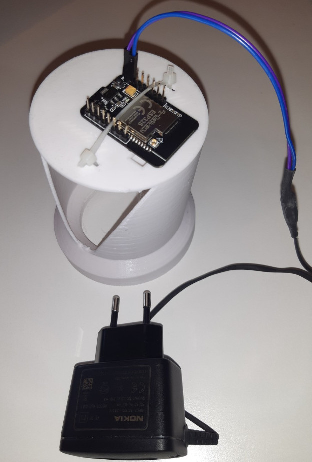

Acquisition
or drop JPEG / PNG
Samples:
Source frame


| # | Type | Input | Class | Confidence | Runner-up |
|---|
| Op | Output (H×W×C) | MACs |
|---|
| Field | Value | Bytes (on air) | Protection |
|---|
| Time (UTC) | Register m³ | Used m³ | m³/day | Bill RWF | Status |
|---|
No messages
Model. Trained on the meter-wheel dataset of Nikić, Bortnik, Lukić, Vukobratović and Mezei, "Lightweight Digit Recognition in Smart Metering System Using Narrowband Internet of Things and Federated Learning", Future Internet 16(11):402, 2024 (GPL-3.0), plus synthetic register images. The dataset covers a single meter model; accuracy on other meters depends on image quality and register layout, and the register region may need to be drawn manually. Inference runs in the browser on a port of the TFLite reference INT8 kernels, verified bit-exact against TensorFlow Lite.
Simulation. The cellular session, WASAC back end, customer accounts, tariff and *150# short code are simulated or illustrative and do not represent WASAC systems or data.
Deployment. Planned: fine-tuning on WASAC-installed meter types, a supervised pilot against manual readings (Gasabo, Kicukiro, Nyarugenge), on-device latency and battery measurement, and billing / SMS integration with WASAC and RURA.
Images. "Izsu sayacı" by Satirdan kahraman, Wikimedia Commons, CC BY-SA 4.0. The ARAD meter image is from a public web search, used for demonstration only, and remains the property of its owner.
Hack-Nation 7th Global AI Hackathon · Small AI for Development